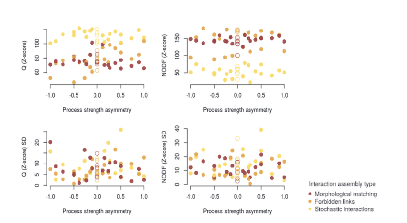
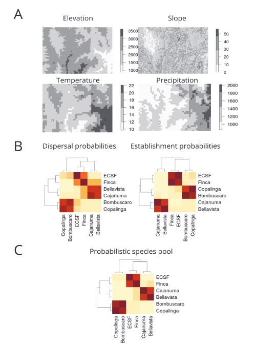
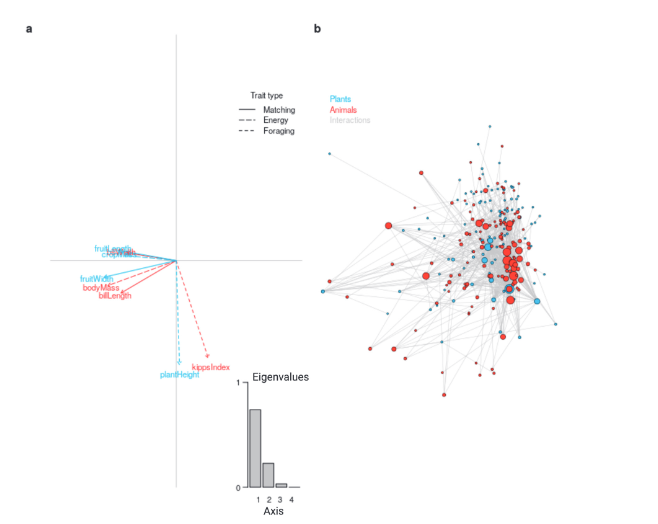
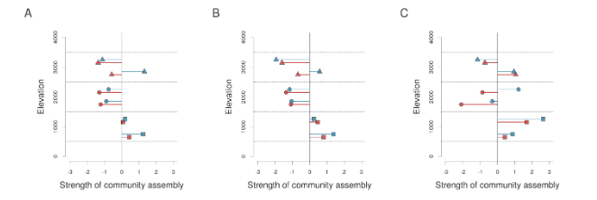

Appendix A — Trait-based inference of ecological network assembly
A.1 Simulating resource-consumer network assembly
We applied our conceptual framework to assess the influence of community and interaction assembly processes on network structure. To this end, we simulated the assembly of probabilistic bipartite networks under different combinations of stochastic and deterministic (trait-based) assembly processes within and between trophic levels (Figure 2 in the main text; Table S1). Trait-based simulations of network assembly allow exploring the relationships between trait based assembly processes and emergent network structures. Moreover, simulations help to avoid empirical biases when inferring network assembly processes. Such biasses include correlations among traits and potentially hidden traits and niches when testing for neutrality or environmental filtering (Barabás et al. 2013). Below we describe the steps we followed for a trait-based simulation of network assembly processes:
A.1.1 Step 1: Defining the species pools
We simulated regional species pools separately for resource and consumer trophic levels. Each pool consisted of \(5{,}000\) individuals, distributed uniformly among \(500\) species. As such, the relative abundance for all species was \(1/500\). Each consumer species, \(c\), and each resource species, \(r\), was assigned a trait mean (\(t_c\) and \(t_r\), respectively) from a uniform distribution ranging from \(0\) to \(1\). Each consumer individual, \(i\), was assigned a trait value of \(t_{ci}\), drawn from a normal distribution around \(t_c\) (\(\sigma = 0.001\)). Each resource individual, \(j\), was assigned a trait value of \(t_{rj}\), drawn from a normal distribution around \(t_r\) (\(\sigma = 0.001\)). We considered one-dimensional trait distributions in this simulation in order to represent the combined effects of several response traits from \(n\)-dimensional hypervolumes (Blonder et al. 2014).
A.1.2 Step 2: Creating local communities
We used a coalescent-based algorithm (Munoz et al. 2018) to assemble local consumer and resource communities individuals from the regional species pool. Each local community numbered 500 individuals. Under this algorithm, the occurrence and abundance of a species in a local community depends on the successful immigration of ancestor individuals from the species pool and subsequent survival of descendant individuals. The algorithm is governed by a migratory rate parameter, m, that ranges from 0 to 1 (Hubbell 2001, Munoz et al. 2018) where higher values of m increase the effect of offspring on the final composition of local communities. That is, the simulation of the local communities has an element of temporal evolution determined by the migratory rate parameter. However, when building the resource-consumer networks in the later steps, we only consider the resulting local communities, not the genealogy leading to them. The coalescent-based assembly algorithm is part of the ecolottery package (Munoz et al. 2018) for the R software (version 3.5.3; R Core Team 2019). To explore variation in network structure under various ecological conditions, we varied the simulation parameters to represent variation in community and interaction assembly processes. We simulated a total of 108 unique bipartite network assembly scenarios. Seventyeight assembly scenarios had the same community assembly process at both trophic levels and 30 assembly scenarios had a trait-based community assembly process at one and a stochastic community assembly process at the other trophic level (Table S1). To vary the community assembly process, we modified the function governing the probability of an individual successfully immigrating from the species pool to the local assemblage (pci for consumer individuals and prj for resource individuals) to simulate the stochastic assembly and/or trait-based assembly at each trophic level.
A.1.3 Step 2.1: Simulating community assembly processes
A.1.3.1 Step 2.1.1: Stochastic community assembly
We simulated two processes of stochastic assembly, namely ecological drift (Vellend 2010) and demographic stochasticity (Hubbell 2001). We simulated ecological drift by choosing a uniform immigration probability distribution that was independent of individuals’ trait values. Specifically, all individuals had an equal probability, \(p_{ci} = p_{rj} = 0.1\), of being sampled from the regional species pool. Replacement probabilities of simulated mortality events during community formation were accounted for to simulate the effects of ecological drift and demographic stochasticity (Etienne and Olff 2004). After a simulated mortality event during community coalescence, individuals can be replaced with the offspring of the remaining individuals in the local community \((J - 1)\) or with a new immigrant individual from the species pool with probability \((1 - m)\). The competition of local offspring and immigrants to replace dead individuals in the community is commonly referred to as the immigration parameter \(I\). The immigration parameter \(I\) depends on both \(m\) (migratory rate parameter) and \(J\) (number of individuals in the community), such that \(I = m(J - 1)/(1 - m)\) (Etienne and Olff 2004). In our simulations, we set \(m = 0.5\) to reduce the effect of genealogy on the local community and thus mimic conditions where local communities are formed mainly by the initial migrant individuals. In addition, no trait-based constraints were imposed on the immigration probabilities of individuals from the species pool to the community (Munoz et al. 2018). Further work can explore changes in the immigration parameter in order to parameterize models of network assembly along the genealogy of communities (Etienne and Olff 2004; Etienne 2009; Munoz et al. 2018).
A.1.3.2 Step 2.1.2: Environmental filtering
We simulated trait-based processes as trait-dependent individual based immigration probabilities from the regional pool. Specifically, to simulate environmental filtering, we assigned probabilities of successful immigration of individuals from a normal distribution around an arbitrarily centered trait optimum, \(t_{opt}\) = 0.2, with a standard deviation of \(σ_{opt}\) . (Figure 2 in the main text; Munoz et al. 2018). That is:
We modulated the intensity of environmental filtering by varying \(σ_{opt}\), where more intense filtering was simulated by a narrower distribution. We used five different values of σopt, from weak \(σ_{opt}\) to strong ( \(σ_{opt}\) = 0.1), to simulate a gradient of filtering intensities, i.e. process strengths.
We simulated distinct (im)balances of deterministic resource and consumer assembly processes by independently varying the intensities of trait-based community assembly at consumer (σoptc) and resource trophic levels (σoptr). We computed process strength asymmetry (PSA) calculated as the natural logarithm of the ratio of consumer and resource process strengths (Equation S2). We considered process strengths to be asymmetrical when PSA ≠ 0. Symmetry of process strengths between trophic levels occurs at all same magnitude combinations of σoptc and σoptr, which renders PSA = 0.
A.1.3.3 Step 2.2 Simulating interaction assembly processes
After generating the local resource and consumer communities, we simulated interaction assembly processes between the two trophic levels. We calculated the probability, pc,r, of interaction between for resource and consumer species modelled at the species individual level for distinct interaction assembly process types ranging from stochastic (density-dependent) to deterministic (trait-based).
A.1.3.4 Step 2.2.1 Stochastic interaction assembly
We modelled stochastic interaction assembly as purely density dependent probabilities. This ecologically emulates random encounter probabilities between individuals of the species in the community, assuming a well-mixed system. As a consequence, \(p\), is independent from the species’ trait values. The probability that consumer species \(c\) and resource species \(r\) interact is only driven by the change in their relative abundances, such that the interactions that occur most frequently are those between the most abundant species (Morales-Castilla et al. 2015, Chacoff et al. 2018) (Equation S3).
A.1.3.5 Step 2.2.2 Functional trait matching
To simulate trait-based interaction processes between trophic levels, pairwise interaction probabilities, pc,r, were dependent on the species individuals’ trait values. We modelled pairwise interaction probabilities by simulating two distinct types of functional trait matching: forbidden links and morphological matching. Forbidden links is a type of deterministic interaction assembly process whereby interaction partners are constrained to species within a certain range of traits (Morales-Castilla et al. 2015). Within this constrained set of potential partners, species’ relative abundances define pairwise interaction probabilities. This mimics interactions that occur in nature as if, for example, resource selection is gape-limited (e.g., small-beaked birds cannot eat large fruits, but largebeaked birds can eat fruits of all sizes). Thus, we simulated interaction assembly governed by forbidden links as:
Morphological matching is another type of deterministic interaction assembly process. Here, pairwise interactions occur only whenever there is a strong trait match between the values of functional traits of species individuals (Maglianesi et al. 2014, Sazatornil et al. 2016). In our simulations under morphological matching, the effect of the trait-based interaction assembly modifies the probability of abundance driven interactions between species. In nature, morphological matching arises due to the evolution of functional specialization between6 interacting species pairs (e.g., insect proboscis length - corolla length; Sazatornil et al. 2016) or represents cases where optimal foraging governs the ecological interactions between species (Maglianesi et al. 2014, Sazatornil et al. 2016). Our definition of morphological matching reflects the definitions presented by preceding literature (e.g., Maglianesi et al. 2014) such that we considered the strength of trait matching to be fixed instead of varying the trait matching strength. That is, we did not consider scenarios of adaptive foraging or the context dependency of pairwise interactions. Such processes could be introduced in the simulations by regulating trait matching strength with a sigma parameter similarly to environmental filtering simulations (section S2.1.2). Thus, we simulated interaction probabilities to depend on the difference in trait values between consumer and resource species as well as on the relative abundances within trophic levels (A).
That is:
A.1.4 Step 3: Assembling resource-consumer networks
As a result of our simulations, we obtained a set of probabilistic interaction networks at the species level. We collapse these initial probabilistic networks into binary networks by considering as realized interactions (\(p = 1\)) those interactions whose pairwise interaction probability falls above the fourth-largest quantile of the whole probability distribution, and by assigning interactions under that threshold a value of \(p = 0\). Species that were present in the probabilistic network but not linked to any species after the threshold were not considered part of the “observed” interaction network. We recognize that thresholding probabilistic networks may lead to an under-representation of rare interaction events (see Poisot et al. 2015), but we expect those effects to be minimal and unlikely to change the larger patterns of network structure under distinct assembly process types.
A.1.5 Step 4: Quantifying resource-consumer network structure
We selected two widely used metrics of network structure for binary bipartite networks: modularity and nestedness. Modularity is a measure of the degree to which a network is divided into modules. Modules are clusters of network nodes (species) with many links amongst themselves and few links to nodes in other modules. In highly modular networks, there are7 cohesive sub-clusters of species interacting more with each other than with other species present in the network (Olesen et al. 2007). We quantified the modularity of our simulated networks using the Q metric (Barber 2007). This metric is calculated using a label-propagation algorithm (Liu and Murata 2010, Beckett 2015) which maximizes Barber’s modularity (Barber 2007). Nestedness is a measure of the degree to which nodes with few links share a subset of the links of nodes with many links. In perfectly nested networks, interaction partners of specialists are subsets of the interaction partners of generalists (Bascompte et al. 2003). In the case of consumer-resource networks, it is a measure of the degree to which specialists consume a subset of the resources consumed by generalists. We quantified the nestedness of our simulated networks using the NODF metric (Almeida-Neto et al. 2008). The functions to calculate modularity and nestedness were implemented from the bipartite package for R (Dormann et al. 2009).
Modularity (\(Q\)) and nestedness (\(NODF\)) values are dependent on intrinsic network properties, such as network size and connectance (Fortuna et al. 2010; Beckett 2015; Simmons et al. 2018; Song et al. 2019). We expected the effect of network size on network metric variation to be minimal because we simulated our networks to vary little in their species richness and connectance. However, to minimize any issues related to network size and to ensure that our network structure metrics are comparable across simulation scenarios, we standardized modularity and nestedness using Z-scores for the network structural indices. We did this by subtracting the observed metric values from the expected mean values of a null distribution and dividing by the standard deviation of that null distribution. We selected two swapping algorithms to generate this null distribution of expected network metric values from \(100\) independent network rewires. We used two different rewiring models that keep network size and row and column totals constant. The first, the DegreeProbable–DegreeProbable model, shuffles individual elements \(d_{i,kj}\) of the pairwise interaction matrix based on the probability \(p_{ij}\) that corresponds to:
Additionally, to ensure that the choice of rewiring method does not influence the estimated network metric values, we separately used the “curveball” rewiring algorithm (Strona et al. 2014) to calculate network metric Z-scores. This algorithm also maintains row and column sum totals constant but swaps elements in a stepwise manner. First, the algorithm lists all the column elements occurring on each row. Second, it “trades” the non-occurring elements between two of the random of the previously created lists and reiterates this process a number of times. Finally, it reconstructs a presence-absence matrix from the reshuffled list (Strona et al. 2014). We found that the two rewiring methods produced parallel results and do not present the results of the “curveball” method here.
To test for the effects of connectance on network metric variance, we calculated the correlation of modularity \(Q\) Z-scores and nestedness \(NODF\) Z-scores with connectance for all simulated networks using Spearman rank correlations. Our thresholding approach produced similarly sized networks with typical levels of connectance in natural resource–consumer networks (\(0.2\)–\(0.4\); Valdovinos et al. 2016). Networks assembled under stochastic interaction and forbidden-links assembly had similar connectance levels (NL: mean \(= 0.29\), sd \(= 0.03\); FL: mean \(= 0.28\), sd \(= 0.04\)) that were higher than those for networks assembled with morphological matching (MM: mean \(= 0.22\), sd \(= 0.04\)). We expected slightly lower connectance levels for morphological matching networks, since morphological trait matching increases the overall level of specialization of pairwise interactions. We found weak correlations between connectance and nestedness \(NODF\) Z-scores (\(\rho = 0.32\), \(p = 0.004\)) and between connectance and modularity \(Q\) Z-scores (\(\rho = -0.17\), \(p = 0.11\)) across the simulated networks. We used binary modularity and nestedness because they represent contrasting properties of network structure and are commonly used to summarize the dynamics of ecological networks, such as robustness and stability (Staniczenko et al. 2013; Grilli et al. 2016; Guzman et al. 2020). However, our framework can equally be applied to other measures of network structure, including quantitative metrics (e.g., network-level specialization, \(H_2'\); Blüthgen et al. 2008; spectral radius \(\rho(\cdot)\); Staniczenko et al. 2013).
A.1.6 Step 5: Quantifying the effects of trait-based assembly processes on network structure
To quantify the effect of trait-based assembly processes on network structure, we first defined a two-dimensional space of modularity (\(Q\) Z-score on the \(x\)-axis) and nestedness (\(NODF\) Z-score on the \(y\)-axis) (Figure 3 in the main text). Mean modularity and nestedness across simulation replicates of all simulated networks were mapped in this network-structure space. Thus, the standardized mean differences among networks represented their overall structural differences. We quantified the effect of trait-based interaction assembly as the pairwise distances between networks that share the same community assembly process but differ in their trait-based interaction assembly. Specifically, we calculated the standardized mean differences between networks assembled under forbidden links and morphological matching relative to the corresponding networks assembled under stochastic interaction assembly. Within each trait-based interaction assembly type (i.e., clusters of symbols in Figure 3 in the main text), we quantified the effect of trait-based community assembly as the standardized mean differences between networks assembled under environmental filtering and networks assembled under stochastic community assembly (i.e., standardized distances of symbols relative to the cluster cross in Figure 3 of the main text).
A.1.7 Step 6: Quantifying the drivers of variation in bipartite network structure
Using multiple regression, we first modelled the relationship between each stochastic or trait-based community and interaction assembly process and network structure for those 78 network scenarios with the same community assembly process at both trophic levels. We did this separately for modularity (\(Q\) Z-score mean) and nestedness (\(NODF\) Z-score mean) and for each interaction assembly type, totaling six different linear models. For each of these linear models, we used commonality analysis (Nimon et al. 2008; Ray-Mukherjee et al. 2014) to decompose the explained variance (\(R^2\)) in network structure metrics and effects on network structure into components of independent variation attributable to explanatory variables. We carried out this variance partitioning for simulated networks with the same community assembly process at both trophic levels (1) across all scenarios and (2) separately for subsets based on interaction assembly process type. We used these subsets to remove the effect of interaction assembly process on network structure, because the large relative effect of the type of interaction assembly (neutral, morphological matching, forbidden links) absorbed most of the variation and did not allow showing the remaining effect that process strength asymmetry had on network structure (Appendix S2: Figures S1 and S2, Table S1). We used regression commonality analysis because it allows obtaining both the unique and shared effects of entangled community and interaction assembly processes on network structure. This property of the analysis is highly relevant in the context of our conceptual framework, as the effects of community and interaction assembly processes on network structure are likely entangled. Multiple regressions and commonality coefficients were obtained using the packages stats (R Core Team 2019) and yhat (Nimon et al. 2008) for the R environment (version 3.6.3; R Core Team 2019).
Next, to understand how process strength asymmetry influences network structure within a given interaction assembly type, we used GLMs with modularity (\(Q\) Z-scores) and nestedness (\(NODF\) Z-scores) as response variables. In these models, process strength asymmetry (\(PSA\)), interaction assembly type, and their interaction were included as predictor variables. As a next step, we sought to separate the effect of process strength asymmetry on network structure from the total effect of deterministic community assembly processes on networks. To this end, we computed standardized differences in modularity and nestedness between networks assembled under asymmetrical resource and consumer assembly process strengths (i.e., \(PSA \neq 0\)) and networks assembled under symmetrical resource and consumer assembly process strengths (i.e., \(PSA = 0\)).
Finally, we explored the interplay of process strength asymmetry and network assembly mode determining network structure. More specifically, to test for bottom-up and top-down assembly effects on network structure, we excluded either the effect of deterministic (trait-based) resource or consumer community assembly by “switching off” deterministic and “switching on” stochastic community assembly processes. We then compared the structure of the networks where both trophic levels were assembled under the same community assembly process to the networks where the two trophic levels were assembled under contrasting community assembly processes (i.e., with stochastic assembly at one and deterministic assembly at the other trophic level) (Table S1). Thereby, we obtained the effect of network assembly mode on network structure across a gradient of process strength asymmetries. To better understand the interactions11 of community and interaction assembly processes, we compared the relationships between assembly mode and the effects of process strength asymmetry on network structure among interaction assembly types.
A.1.8 Step 7: Quantifying network assembly mode (bottom-up and top-down) effects on network structure
We compared the network metrics of the networks assembled under environmental filtering process at both trophic levels to the network metrics of the corresponding networks assembled with environmental filtering process at one trophic level and stochastic process at the other trophic level. We did this to quantify the bottom-up and top-down effects on network structure. The bottom-up effects were inferred by comparing networks with environmental filtering process at both trophic levels to networks with environmental filtering process at consumer trophic level and stochastic process at resource trophic level. The top-down effects were inferred by comparing networks with environmental filtering process at both trophic levels to networks with environmental filtering process at resource trophic level and stochastic process at consumer trophic level. We calculated effect sizes (SESNET) that corresponded to the standardized mean differences between the compared network metrics (Equation S7.1, S7.2). Finally, we computed network assembly mode as the log-ratio of SESNET between the two trophic levels. That is, the assembly mode was top-down if the log-ratio was positive and bottom-up if the log-ratio was negative (Equation 7.3).
A.1.9 Additional simulation results
Does spatial variation in the relative strengths of community and interaction assembly processes lead to predictable variation in network structures?
Both community and interaction assembly processes significantly influenced the structure of resource-consumer networks (Figure S1A). However, we found that the type of interaction assembly process had the strongest effect on network structure. The effects of trait-based interaction assembly, namely morphological matching and forbidden links, on network structure were equally strong and both deviated from the effects of stochastic interaction assembly (compare delineated clusters in Figure S1A). Both morphological matching and forbidden links resulted in more nested and less modular networks, whereas the opposite was the case for stochastic interaction assembly. When we quantified the effects of community and interaction assembly separately using commonality analysis, we found that changes in the type of interaction assembly process explained 70% and 81% of the total variation in modularity and nestedness, respectively. In contrast, changes in the type of community assembly process explained only 0.2% of the total variation in both modularity and nestedness. Similarly, variation in process strength asymmetry (PSA), explained only 2% and 0.1% of the total variation in modularity and nestedness, respectively. However,2 when we repeated this variance partitioning for subsets of networks under the same interaction assembly type (e.g., forbidden links), 36-64% of the variance in network structure was explained by PSA (Figure S1, Table S1).
How does the relative influence of bottom-up and top-down assembly modes on network structure vary along environmental gradients?
Asymmetry in the relative strength of community assembly processes between the resource and consumer trophic levels (PSA) induced variation in network structures (distribution of points along x-axes in Figure S1B-C). The extent of such variation was larger for network modularity, while the variation was more clearly attributed to interaction assembly type for nestedness (Figure S1B-C). Moreover, the simulated networks varied along the assembly mode gradient (distribution of points along y-axes in Figure S1B-C). For example, networks assembled under forbidden links tended to have a bottom-up assembly mode in terms of network modularity. When considering the variation along PSA and network assembly mode gradients simultaneously, the GLM model showed a significant interaction between the effect of PSA and that of interaction assembly type on modularity and only when pairwise interactions were assembled under forbidden links (Figure S1B-C, Table S1). Process strength asymmetry and network assembly mode had contrasting influences on network structure (Spearman correlation between PSA and assembly mode: r nestedness = -0.02, r modularity = -0.14; calculated for points in Figure S1B-C). Given the negative correlations between
PSA and assembly mode effects on network structure, the mode of network assembly can dampen the overall effect of process strength asymmetry on network structure, particularly for network modularity. We note that we did not pre-determine the assembly mode in the simulations. Rather, we set different strengths of community assembly to resource and consumer trophic levels that can lead to varying assembly modes in the networks. Moreover, given that we quantify the assembly mode relative to a scenario where the community assembly strengths do not differ between trophic levels, the assembly mode in our simulations represents the distances between symmetric and asymmetric community assembly process simulation scenarios in our structural space (defined by modularity and nestedness).3

A.1.10 Additional simulation discussion
Our simulations reveal that in general, interaction assembly matters more than community assembly in shaping networks. Perhaps the most exciting result is that when functional trait matching is the main driver of network assembly, process strength asymmetry dictates the predominance of bottom-up or top-down effects, which is consistent with previous empirical work (Albrecht et al. 2018). In natural networks, process strength asymmetry may be the result of differences in how trophic levels respond to abiotic and biotic drivers (e.g., along climatic gradients; Van Der Plas et al. 2012). Because abiotic and biotic drivers vary spatially, the strength of bottom-up and top-down effects is likely to do so as well (Gripenberg and Roslin 2007). Our simulations show how this variation in the assembly mode can modify network structure through an assembly cascade that emerges from the interdependence of community and interaction assembly processes. That is, assembly processes shaping the composition of one trophic level indirectly govern the assembly of another trophic level, but the magnitude of this cascade depends on the interaction assembly type. Earlier studies have reported somewhat analogous trophic cascades from apex predators to lower trophic levels via resource use (e.g., Ripple & Beschta 2012), but they have focused on single populations (i.e., single species) at each trophic level, rather than communities. Furthermore, they have not considered which and how particular processes within and between trophic levels mediate the observed cascade. Identifying and quantifying such processes is now possible with the help of our framework.5

A.2 Detailed methods and additional results for the case study
A.2.1 Data collection
Data describing frugivore-plant interaction networks were collected at three elevational bands (1000, 2000 and 3000 m a.s.l.) in montane forest habitats in Southern Ecuador (Quitián et al. 2018, 2019). This resulted in six study sites along an elevational gradient. Each study site included three plots, 30 meters x 100 meters in size. Seed removal interactions by frugivorous birds were recorded at all plant species bearing fleshy fruits in each plot. Sampling was conducted four times at each study site in 2014 and 2015, twice during the most humid months and twice during the least humid months. Interactions in each plot were observed on four consecutive days for 25 hours in total. Finally, observations were pooled by combining observations of all plots within each study site. The total observation effort for each study site was 300 hours.
Plants were identified to species or morphospecies level and birds were identified to species level. In each plot, each fruiting plant was observed for a similar amount of time. An interaction was recorded when a bird individual consumed at least one fruit of the plant species. The number of visits between bird and plant species was recorded to build a quantitative network.Data for key functional traits were collected for both plants and frugivores. For plants, fruit length, fruit width, fruit mass and plant height were measured for individuals sampled from the study plots. For birds, bill length, bill width, body mass and hand-wing index were measured for museum specimens. These matching traits correspond between the trophic levels in terms of size, morphology, energy provisioning and requirements, and foraging behavior. For more details on data collection, see Quitián et al. (2018, 2019).
A.2.2 Delineation of the regional species pool
To apply the null model approach to the case study data, we constructed a process-based regional species pool to sample plant and frugivore species from the pool to the local null communities (Figure S1). First, species pool delineation should be specific to a particular community (Lessard et al. 2012). Second, it should consider both the probability of species’ dispersal from the regional pool into the local community as well as the probability of species successful establishment, which is contingent on the species’ ability to tolerate environmental conditions following colonization. Ideally, data describing the geographic distribution, traits, and interactions of all resource and consumer species in a study region would ideally be employed to construct the most realistic species pools (Lessard et al. 2012, 2016), but we often lack the data needed to attain such complexity of species pools. As such, it’s often needed to make our best approximation using data available at the moment of analysis. To characterize the environmental variation we used slope and elevation data derived from a digital elevation model (SRTM shuttle; Farr et al. 2007) and the WorldClim database (version 1; Hijmans et al. 2005) to obtain mean annual temperature and mean annual precipitation for each study site.
In our probabilistic species pool, we defined site-specific sampling probabilities as a function of geographical and environmental distances. We used geographical distances as proxies for the dispersal probabilities of species among sites. We computed geographical distances as least-cost path (LCP) distances penalized by layers of variables describing the topography of the terrain (slope), elevation, mean annual temperature (MAT), and mean annual precipitation (MAP). As proxies for the probabilities of successful establishment of species in a given site, we usedEuclidean distances in multivariate environmental space. We constructed this multivariate environmental space with and computed Euclidean distances between sites in the plane formed by the first two axes of a Principal Components Analysis (PCA) that synthesized the main gradients from slope, elevation, MAT, MAP. Finally, the probability matrix of study sites corresponded to the product of geographical and environmental distance matrices such that both matrices were assigned equal weights (0.5). Clustering analysis of this probability matrix revealed the presence of two clusters with high probability of species exchange within sites. As such, there was a separation of species pool for the high elevation containing the sites at 3000 m.a.s.l. and for the mid-low elevation containing the sites within the range of 1000 to 2000 m.a.s.l.

A.2.3 Applying the null model approach to the observational data
We scaled the multidimensional variance of traits between plant and frugivore trophic levels with an RLQ analysis in a metanetwork consisting of all species and interactions observed across all local networks (Dehling et al. 2014; Dray et al. 2014; Albrecht et al. 2018). Broadly speaking, the RLQ analysis is an ordination method that can be used to quantify the multivariate links between two matrices, \(R\) and \(Q\), via a third matrix \(L\) (Dolédec et al. 1996). We combined the RLQ ordination with a fourth-corner analysis, which integrates a permutation approach designed to test whether the associations between matrices \(R\) and \(Q\) via \(L\) are statistically different from a given null model (Dray et al. 2014). In our case, we adopted a combination of the RLQ and fourth-corner analyses to test for functional relationships between the multidimensional trait spaces of plants and frugivores in the mutualistic networks. More specifically, the RLQ analysis builds on the simultaneous ordination of three tables: a table \(R\) (\(m \times p\)) describing \(p\) traits for \(m\) plant species, a table \(Q\) (\(n \times a\)) describing \(a\) traits for \(n\) frugivore species, and a third table \(L\) (\(m \times n\)) containing qualitative or quantitative information about the occurrence or frequency of pairwise interactions between the \(m\) plant and \(n\) frugivore species. We then applied the fourth-corner permutation test (model \(6\) with \(9{,}999\) permutations; ter Braak et al. 2012) to evaluate the statistical significance of the associations between plant and frugivore trait spaces. For further details, see Albrecht et al. (2018).
We tested for associations between plant and frugivore trait spaces at the regional level, where a significant association implies the presence of a trait-based interaction assembly process (Dehling et al. 2014, Dray et al. 2014, Albrecht et al. 2018). We used the scores of each plant and frugivore species along the first axis of this trait space as a one-dimensional summary of their trait space (Figure S2; Figure 4 in the main text). Note that due to data limitations, we used this one-dimensional summary of the trait space both as response and matching trait in the following steps.To detect the presence of environmental filtering in the plant and frugivore communities within each local network, we compared standard deviations of the RLQ trait values of the local communities to a distribution of standard deviations from 1000 null communities. To produce these null communities, we iteratively sampled one random species from the regional pool until the null community had the same species richness as the respective observed community using a probability-weighted resampling (see Lessard et al. 2012; Figure S1).

We quantified standardized effect sizes of plant and frugivore communities on the standard deviation of the respective trait distribution. We considered a smaller standard deviation than the null expectation to imply environmental filtering, whereas larger standard deviation from the null expectation signaled overdispersion. We then used the trophic level-specific effect sizes of community assembly processes to calculate process strength asymmetry as the log-ratio of community assembly process strengths between plant and frugivore trophic levels (Appendix S1, Equation S2).
Second, we inferred the effect of trait-based assembly processes on network structure. For each observed network, we generated four sets of null networks, each set with \(100\) replicates: \(R_{\mathrm{Obs}},C_{\mathrm{Obs}},I_{\mathrm{Null}}\), \(R_{\mathrm{Null}},C_{\mathrm{Obs}},I_{\mathrm{Null}}\), \(R_{\mathrm{Obs}},C_{\mathrm{Null}},I_{\mathrm{Null}}\), and \(R_{\mathrm{Null}},C_{\mathrm{Null}},I_{\mathrm{Null}}\). To produce these null networks, we simulated plant and frugivore communities with the same species and interaction richness as in the observed communities. For communities with simulated stochastic community assembly processes, we randomly sampled species by sampling individuals from the same cumulative distribution of the \(1{,}000\) plant or frugivore null communities that were used to test for environmental filtering. In other words, we simulated relative abundances based on immigration probabilities, such that species that are more likely to immigrate are also more abundant. For communities with simulated trait-based processes, we maintained the same observed plant or frugivore species composition with uniform relative abundances of species. In all four sets of null networks, we simulated stochastic interaction assembly processes; that is, we set the interaction probabilities as functions of local species’ abundances. We transformed our probabilistic networks into binary ones by sampling interactions based on the calculated pairwise interaction probabilities, such that each null network had the same total pairwise interaction richness as the respective observed network.
After assembling the required null networks, we quantified the network structure of each observed and null network as modularity (Q Z-scores) and nestedness (NODF Z-scores) using the ‘bipartite’ package in R (Dormann et al. 2009). We compared modularity and nestedness values between observed and null networks and estimated the standardized effect sizes (SESNET) of the pairwise differences in network metrics.
By comparing the SESNET derived from each set of null networks, we inferred the relative effects of trait-based resource, consumer, and interaction assembly (Table 1b in the main text). The \(R_{Obs},C_{Obs},I_{Null}\) null network simulates only interaction assembly as a stochastic process; therefore, the SESNET of \(R_{Obs},C_{\mathrm{Obs}},I_{\mathrm{Null}}\) represents the effect of trait-based interaction assembly on network structure. The SESNET of \(R_{\mathrm{Obs}},C_{\mathrm{Null}},I_{\mathrm{Null}}\) includes both the interaction assembly effect and the effect of consumer trait-based assembly. Consequently, \(\mathrm{SESNET}_{R_{\mathrm{Obs}},C_{\mathrm{Null}},I_{\mathrm{Null}}} - \mathrm{SESNET}_{R_{\mathrm{Obs}},C_{\mathrm{Obs}},I_{\mathrm{Null}}}\) constitutes the effect of trait-based consumer assembly on network structure. Similarly, \(\mathrm{SESNET}_{R_{\mathrm{Null}},C_{\mathrm{Obs}},I_{\mathrm{Null}}} - \mathrm{SESNET}_{R_{\mathrm{Obs}},C_{\mathrm{Obs}},I_{\mathrm{Null}}}\) constitutes the effect of trait-based resource assembly on network structure.
constitutes the effect of trait-based resource assembly on network structure. constitutes the effect of trait-based resource assembly on network structure. The SESNET of \(R_{\mathrm{Null}},C_{\mathrm{Null}},I_{\mathrm{Null}}\) represents the total effect of all trait-based assembly processes on network structure, including their non-additive effects due to interactions among processes. The difference between this total effect and the sum of the interaction, consumer, and resource effects indicates the magnitude and direction of the non-additive effect.
We computed the network assembly mode for each of the networks sampled as the log-ratio of the SESNET of consumers (frugivores) and the SESNET of resources (plants). Similar to our simulation results. Positive values indicate predominant effects in network structure of the deterministic assembly of consumer communities whereas negative values indicate predominant effects in network structure of the deterministic assembly of resource communities.
A.2.4 Sensitivity analyses
Firstly, to account for the potential effects of particular species pool delineation when applying our null network model approach, we conducted a sensitivity analysis with distinct definitions of sampling probabilities of species from the regional pool to the local networks (Lessard et al. 2012). In addition to the process-based delineation described above, we simulated local communities by iteratively sampling one random species from any given site until the null community had the same species richness as the respective observed community.
Secondly, we accounted for the potential effects of choosing particular metrics of trait distributions to calculate standardized effect sizes to test for environmental filtering. In addition to using standard deviation as a metric of trait distribution within plant and frugivore communities, we used trait range.
As a result, we applied the null model approach to two different species pool delineations and two different trait distribution metrics. In total, we generated four distinct scenarios to be compared: 1) process-based regional pool + standard deviations of trait distributions (results reported in the main text); 2) process-based regional pool + ranges of trait distributions; 3) randomized regional pool + standard deviations of trait distributions; 4) randomized regional pool + ranges of trait distributions.
We found that the delineation method of the species pool did not strongly affect the estimated community assembly process of either plants or frugivores along the elevational gradient. However, using trait range as a trait distribution metric resulted in community assembly processes that can be interpreted as stochastic community assembly at both trophic levels, whereas using standard deviation of the trait distribution as a trait distribution metric resulted in a tendency towards environmental filtering as the community assembly process for both trophic levels.
We found that the delineation method of the species pool caused variation in the process strength asymmetry direction and magnitude along the elevational gradient (Figure S3). However, independent of the regional pool delineation, the process strength asymmetry was consistentlypredominated by the plant community assembly process strength (Figure S3). The choice of trait distribution metric also caused variation in the process strength asymmetry direction and magnitude (Figure S3). In addition, the choice of trait distribution metric influenced the overall pattern of process strength asymmetry direction, indicating a more frugivore-inclined asymmetry (Figure S3). We conclude that the choice of methodology in defining the regional species pool and the trait distribution metric should be considered carefully to correspond to the ecological question and the focal study system.

To test the robustness of the results with weighted network metrics and to illustrate the use of quantitative networks with our framework, we repeated the case study calculations using weighted interaction data (based on interaction frequencies) and weighted modularity as a metric of network structure (weighted Q; Beckett 2016). We calculated the weighted version of modularity Q relative to the ‘quasi_swap’ null rewire model (‘vegan’ package; Oksanen et al.2013). We did not find qualitative differences in the network assembly results between the analyses using binary and weighted versions of modularity (Table S1, Figure S4).

A.2.5 Applying the null model approach to observational data: stepwise results
In step 1 of the null model approach, we quantified the type and strength of community and interaction assembly processes. Regarding community assembly, we found that plant and frugivore communities were functionally less dispersed than random expectations in one study site at lowest elevation, suggestive of environmental filtering (Figure 5 in the main text). At higher elevations, both plant and frugivore communities were more stochastically assembled, but the tendency was towards environmental filtering rather than limiting similarity. Regarding interaction assembly, we found signals of trait-based interaction assembly in the form of functional trait matching (Figure S2, Figure 4B in the main text).
In step 2 of the null model approach, we inferred the trait-based effects of community and interaction assembly on network structure. We did this by calculating the SESNET for each observed network against all four null networks in terms of modularity and nestedness (Table S2). Table S2. Standardized effect size (SESNET) summaries for each trait-based effect on the six plant-frugivore network structure along elevational gradient. The variables correspond to the null networks and the trait-based effects described and interpreted in Table 1 in the main text.
In step 3 of the null model approach, we interpreted the community and interaction assembly process effects on network structure by linking step 1 and step 2 (Figure S5). To visualize this, we scaled the additive partitioning to sum to 1 by normalizing the effect sizes of interaction assembly, consumer community assembly, and resource community assembly by the total deterministic effects. We recognize this spreads the synergistic effects among the three assembly components relative to the total deterministic effects. However, normalizing allows spreading the synergistic effects evenly for all assembly components. We interpreted that trait-based assembly effects increased both modularity and nestedness of plant-frugivore networks (‘Total trait effects’ in Table S2). Interaction assembly effects on modularity were largest in comparison to plant, frugivore, and non-additive assembly effects (Table S2). Interaction assembly effects on nestedness were also larger than the effects of plant and frugivore assembly, but smaller than the interactive effects (Table S2). Based on steps 1 and 2, we interpret that trait matching plays the most important role in shaping the frugivory network structure. There was a slight tendency toward environmental filtering in step 1 for both plant and frugivore trophic levels, indicating that environmental filtering plays a smaller, but somewhat significant direct role in shaping network structure. However, the filtering strength asymmetry had an indirect effect on the network structure.

A.2.6 Future case studies
The generality of the results obtained with the case study on plant-frugivore interactions along an elevational gradient can be tested using other datasets and different study systems. We list some potential other big questions to be explored with the framework and the analytical steps outlined in our work (Table S3).